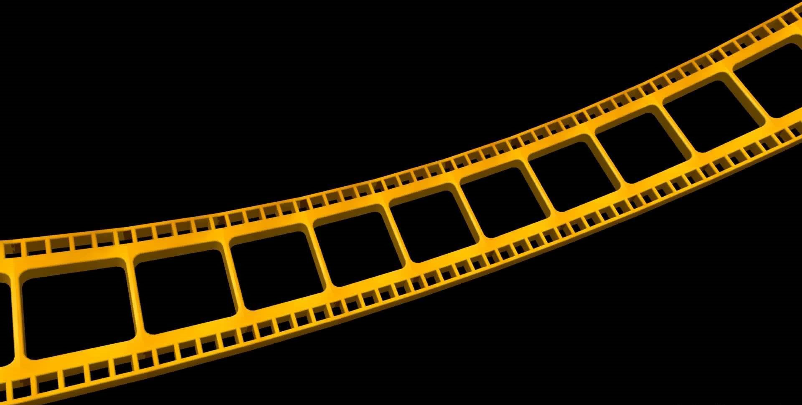

Greatest Of All Time
This is the most objective list of all time of the best films ever (totally not just personal favourites).
There is also list of some of the best directors included at the end as a treat for you making it that far.
15. Raiders of the Lost Ark
Spielberg's thrills-spills-and-chills masterpiece Raiders of the Lost Ark is both an homage to classic movie serials and also something totally of its early Eighties' moment. It's a film of beautifully conceived and precisely executed action - each scene more surprising, ornate, and eye-popping than the last - yet archeologist and man of adventure Indiana Jones (Harrison Ford) is never just a figure inside a big, SFX machine; the set pieces work because the film is so firmly invested in character. Watch how our hero and his duplicitous guide go back and forth in the film's breathtaking opening sequence; or Indy's interactions with Marion (Karen Allen) in the Well of Souls; or his weirdly jokey exchanges with the various Nazi foot-soldiers and drivers throughout the film's incredible desert truck chase scene. Its effects and technique are dazzling; it's a perfect blend of jaw-dropping spectacle and the sort of actor-driven movie-movie moments that are redolent of Golden-Age-of-Hollywood classics; and it's as perfect a piece of pure, uncut entertainment as anyone has produced in the last few decades.
14. Suspiria (2018)

The power from Suspiria (2018) comes from its atmospheric lure into a false sense of security. Hauntingly echoed by Thom Yorke’s excellent score, the intense technicolour and its sound have been replaced by a gritty and grounded tone of 70s Berlin. Offset by Yorke’s experimental design, this is a Berlin still recovering from the aftermath of World War II yet tragically refortifying its divisions with the Berlin Wall. With the constant background thread of domestic terrorism from the Red Army Faction, mysterious disappearances due to a coven of witches at a dance academy and intrusive religious practices, Suspiria revels in it’s ‘behind the scenes’ claustrophobia. This is a sheltered containment and with the occasional hoodwinks in hypnotism, hidden passageways and witchcraft, this is an evil hiding in plain sight, catching the attention of a psychotherapist in Dr. Josef Klemperer (Lutz Ebersdorf).
With a measured control in its plot-driven execution, its mystery is built on the slow-burn foundations of impending revelations and approaching darkness. Ditching the Fifty Shades of Grey repertoire, Dakota Johnson plays Susie Bannion, a young American who travels to Berlin to audition for the Markos Dance Company. Catching the instinctive eye of Madame Blanc (Tilda Swinton) begins the malevolent discourse towards an escalating and suspenseful hell.
13. Back to the Future
Back to the Future is by far one of the most competent time travel movies ever made, addressing even the most common loophole, which concerns characters from the future affecting the course of the past, leading directly to the presumed unaltered present – as well as the multiple versions of each role created by introducing numerous timelines. And it doesn’t seem terribly complex in the context of the film. The Butterfly Effect is purposely addressed for the sake of preventing Marty from meddling with anything that might disrupt what is supposed to happen, along with apprising of the danger of any man knowing too much about his own destiny. This is given a slight twist when necessary, with an explanation moderately conceptualized as Marty’s siblings’ gradual disappearance warns of his own existence being threatened. In a brilliant subplot, he’s forced to mend the past that he’s unwittingly recalibrated by devising a way to reconnect his future parents and stifle Lorraine’s accidental fixation on him.
Directed by the capable Robert Zemeckis, executive produced by Steven Spielberg, and featuring a superb cast and Academy Award-nominated script, “Back to the Future” is an unforgettable, thrilling, laugh-out-loud funny, spectacularly entertaining cinematic treasure.
12. Scott Pilgrim vs. the World

Scott Pilgrim vs. the World is a brilliant example of taking a style and just going to the extreme with it. Its speedy, funny, happy-sad spirit is so infectious that the movie makes you feel at home in its world even if the landscape is, at first glance, unfamiliar. The fights between Scott and Ramona's evil exes are as much like musical numbers as standard action sequences.
There is plenty of kinetic visual wit in Scott Pilgrim vs. the World — fast cuts, off-kilter puns, sight gags and sound effects in such profusion that you may want to see it again as soon as its over. But underneath is a disarming sincerity and a remarkable willingness to acknowledge ambivalence, self-doubt, hurt feelings and all the other complications of youth. At the end, the movie comes home to the well-known territory of the coming-of-age story, with an account of lessons learned and conflicts resolved. But you’ll swear you’ve never seen anything like it before.
11. The Dirty Dozen
The Dirty Dozen is one of my favourite films. This ranking is the height of personal bias in this list, I used to watch this film with my grandfather all the time and we would keep rewatching it. One of my most cherished memories with him. In the Dirty Dozen the U.S. Army singles out 12 really tough guys, murderers and rapists and men like that, and assigns them to wipe out a chateau where a lot of German officers spend their holidays. Before the big mission, the "dirty dozen" train under the leadership of Lee Marvin. There are some nice, amusing scenes, especially when one of the dozen (Donald Sutherland) pretends to be a general and inspects some troops. In fact, right up to the last scene the movie is amusing, well paced, intelligent.
10. Alien
Dark, foreboding, macabre, and intense, Ridley Scott’s Alien is the finest example of horror and science-fiction fused together in the history of cinema. Often copied but never equaled, this Grand Guignol tale of survival manages to be creepy, deathly serious, undeniably frightening, and somehow within the boundaries of nightmarish believability. The scares that aggrandize are stunning in their setup, carefully executed with artistically eerie sets, highly unique biomechanical alien compositions, and an abundance of steam, flashing sirens, and thick slime. The set designs, cinematography, and editing are nothing short of spectacular, working to create visuals and an atmosphere that are absolutely unforgettable.
9. Terminator 2: Judgment Day
An undeniable science-fiction masterpiece, Terminator 2: Judgment Day is brimming with so much adventure, pulse-pounding thrills, visual and scripted humor, and surprisingly solid acting that even those who don’t enjoy the genre can marvel over the cohesive moviemaking techniques. The always-tricky time travel implausibleness doesn’t even interfere with its entertainment value. And while bigger isn’t always better, writer/director James Cameron’s follow-up is genuinely bigger and better in nearly every way, expanding upon the successes of the original production without resorting to cheap gimmicks, overuse of prior ideas, or a diminishment of inventiveness and creativity.
8. Snatch
The follow up to Lock, Stock, and Two Smoking Barrels proves that slight variations to a tried and successful formula can create an entertaining and enriching watch. So it goes with Snatch, another crime film by Guy Ritchie set within London’s underworld of hustlers and gangsters all out for the big payday.
This film revolves around the recapture of a large diamond, of which a slew of colourful characters that only Ritchie could write – among them an American Jewish gangster (Dennis Farina), a seemingly immortal Russian (Rade Serbedzija), and a professional hard man named Bullet Tooth Tony (Vinnie Jones) - scramble to locate.
Simultaneously, two men involved in the unlicensed boxing circuit (Jason Statham and Stephen Graham) find themselves in debt to a truly mean bastard of a crime boss named Brick Top (Alan Ford), whose favourite method of dispatching his victims is by feeding them to pigs. Their only saving grace lies in the unpredictable Irish Gypsy Mickey, played by a scene stealing Brad Pitt who is given all of the best lines, even though some might not understand a word he mutters.
7. Shaun of the Dead
Shaun of the Dead is one of those movies whose events are linear, and not very surprising. However, there is a proposal of high dramatic weight in the conflict of Shaun, our esteemed main character. Shaun is a failed young man, who lives with Ed, his best friend, and with Pete, an executive who only serves to criticize them for being in front of the television all day. But Shaun is not only criticized by Pete. His stepfather rejects him, and his girlfriend threatens to leave him for doing nothing with his life. Everything looks bad for Shaun. Ed is the only thing he has left. Together they go out to get drunk, and that same night, something unexpected happens. A zombie apocalypse begins. Ed and Shaun are the perfect soldiers to fight the undead between the knowledge of the culture of the subgenre and the lack of fear.
Wright designs Shaun of the Dead from start to finish. The young director applies a surprising talent when it comes to mixing horror and comedy, with high dramatic tones. Only the best comedies are characterized by such inclusions. Shaun's character has nothing to lose, becoming a pseudo hero overnight out of the need to be himself and rescue his own mother, girlfriend, and the rest of his friends. Wright's satire is well dosed so that there is a perfect balance between blood, laughter, and a script that passes too quickly.
Shaun of the Dead is a nice and fond memory that I will always return to. Relationships between friends, difficulties as a couple, and many closeups in a zombie scene, are some of the characteristics of a film that seemed too strange to be true. But with a clear vision of a talented and knowledgeable young director an important film is built. With social commentary and tons of tributes (note the name of the store Shaun works in, note the name of the restaurant Shaun wants to take his girlfriend to), Shaun of the Dead is the rare zombie movie that will make you squirm with laughter, on more than one occasion.
6. Spider-Man: Into the Spider-Verse
Spider-Man: Into the Spider-Verse is a raucous, smart, self-referential adventure. The comics-inspired visuals are stunning, and the emotional coming-of-age story is relevant and inspiring. Along with the story insights and laughs, Spider-Man: Into the Spider-Verse is undeniably a visual powerhouse, with a style unlike any previous comics adaptation. The film pulls both from traditional 3D computer animation and comic book aesthetics, mashing them up into a dazzling, kinetic style. In one moment, the film lays out multiple panels on the screen. In another, it uses written captions to mirror Miles’ internal monologue. In yet another, it deploys familiar written sound effects to match the action. It allows the directing team — Rothman, Bob Persichetti, and Peter Ramsey — to litter every frame with as many flourishes and blink-and-miss-it gags as possible.
The fact that it feels honestly, truly unique — is one of the most invigorating aspects of Into the Spider-Verse. It is incredibly exciting because it eschews all of that. It’s innovative, irreverent, and dynamic. It’s hilarious but exceptionally earnest, with a lead character worth caring about. It contains one of my favourite scenes in all of film.
5. Hot Fuzz
In many ways, Hot Fuzz is a traditional buddy cop comedy; Pegg acts as the uptight straight man, an overachieving police officer from London named Nicholas Angel who reluctantly transfers to Sanford, Gloucestershire after he’s informed that he’s doing so well that he’s making his colleagues look bad, while Frost is Danny Butterman, the goofy, complacent comedic relief, constantly on his way to the pub or rattling on about his love for action and buddy films. The set-up is simple – and then it isn’t. Wright is a master of taking on genre conventions and making them his own, and Hot Fuzz is no different. It directly references the films it’s inspired by; Bad Boys II and Point Break act as a point of bonding for Nicholas and Danny and eventually inspire Nicholas to go full bad-ass. It is a classic cop action film; Nicholas needs Danny’s help to adjust to small town life, while Danny needs Nicholas’ help to take himself seriously. This take on the formula is smart, slick, and has a lot of heart. The action sequences are just as thrilling as any other genre staple, but there’s a sense of physical comedy combined with a killer script (and soundtrack) that elevates Hot Fuzz to an entirely new place.
Hot Fuzz succeeds because it is wholly and entirely self-aware. The pacing is quick, sharp, and absolutely uproarious – when Nicholas and Danny banter, it’s a total treat. Wright understands how to perfectly balance action, comedy, drama, and suspense, and it pays off; the film goes from hilarious physical sequences involving chasing a swan to the discovery of a cult conspiracy and a poor woman being murdered with garden shears without skipping a beat. Characters of a geriatric nature are given guns to wield and use the filthiest of language. The one woman on the police force has the most delectably crass sense of humor of the lot. The film is delightfully, brilliantly satirical, and a stunning homage to the flicks that came before it. The buddy cop genre is one that’s easily tired because of the volatile nature of the formula, but Hot Fuzz found a way to utilize script, editing, and performances to produce a thrilling example of just how great the buddy flick can be – a triumph that we’re still celebrating ten years later.
4. Pirates of the Caribbean: The Curse of the Black Pearl
Pirates of the Caribbean: The Curse of the Black Pearl is such a fun film, fun is the best word to describe it. The movie is a pirate adventure that grips you from the start and does not let go until the end. The story, the characters, the setting, the music and the cinematography all work together into making one of the most enjoyable films I have ever seen. The locations are painstakingly made, costumes are elaborate and authentic, props like the massive ships are beautifully detailed, and the stunt choreography and related fight sequences are thrilling.
Despite a few cheesy one-liners, the screenplay is surprisingly keen (most of the dialogue is a mix of familiar pirate lingo, archaic phrases, and sharp sarcasm). The comedy elements work nicely with the characters, which are shaped to be equal portions serious and funny, but always manageably believable within the realm of this visually splendid world of magic and adventure. Utilizing the verbiage and the humor is an abundance of entertaining character actors, but it’s Johnny Depp who steals the show, creating a swashbuckling persona so outrageously regaling it single-handedly adds so much to this film. His performance was also notably and unexpectedly nominated for a Best Actor Academy Award. And last but not least, the thundering, unforgettable score by Klaus Badelt is all but synonymous with the Pirates of the Caribbean franchise.
3. Pulp Fiction
Quentin Tarantino's Pulp Fiction is mesmeric and mad: callous, insolent, breathtaking. The icy wit, the connoisseur soundtrack, the violence, the extended dialogue riffing, the trance-like unreality, the inspired karmic balance of the heroin scene and the adrenalin scene, the narrative switchbacks that allow John Travolta to finish the film both alive and dead, the spectacle of him being made to dance badly, but also sort of brilliantly... above all else, the sheer directionless excitement that only Tarantino can conjure.
Travolta and Samuel L Jackson play Vincent and Jules, a couple of bantering hitmen working for Marsellus (Ving Rhames), who is highly protective of his wife, Mia (Uma Thurman), and about to conclude a payday from a fixed boxing match; Marsellus's fighter, Butch (Bruce Willis), is haunted by a childhood encounter with his late father's best friend (a jaw-dropping cameo from Christopher Walken). Everyone's destiny plays out with that of a couple of freaky stick-up artists, played by Amanda Plummer and Tim Roth.
2. Star Wars: The Empire Strikes Back
Star Wars: The Empire Strikes Back is the best of three Star Wars films, and the most thought-provoking. After the space opera cheerfulness of the original film, this one plunges into darkness and even despair, and surrenders more completely to the underlying mystery of the story. It is because of the emotions stirred in Empire that the entire series takes on a mythic quality that resonates back to the first and ahead to the third. This is the heart.
The film was made in 1980 with full knowledge that Star Wars had become the most successful movie of all time. If corners were cut in the first film's budget, no cost was spared in this one: It is a visual extravaganza from beginning to end, one of the most visionary and inventive of all films.
In the glory days of science fiction, critics wrote about the "sense of wonder". That's what The Empire Strikes Back creates in us. Like a lot of traditional science fiction, it isn't psychologically complex or even very interested in personalities (aside from some obvious character traits). That's because the characters are not themselves--they are us. We are looking out through their eyes, instead of into them, as we would in more serious drama. We are on a quest, on a journey, on a mythological expedition. The story elements in the Star Wars trilogy are as deep and universal as storytelling itself. Watching these movies, we're in a receptive state like that of a child--our eyes and ears are open, we're paying attention, and we are amazed.
1. The Lighthouse
The Lighthouse is my favourite film as of right now. Robert Eggers’s gripping nightmare shows two lighthouse-keepers in 19th-century Maine going melancholy mad together: a toxic marriage, a dance of death. It is explosively scary and captivatingly beautiful in cinematographer Jarin Blaschke’s fierce monochrome, like a daguerreotype of fear. And the performances from Willem Dafoe and Robert Pattinson have a sledgehammer punch – Pattinson, in particular, just gets better and better.
There is rare excitement in seeing these two actors butt heads and trade difficult, complex period dialogue with such mastery and flair. And the screenplay by Robert and Max Eggers is a delicious and often outrageous homage to maritime speech and sea-dog lore. It is one of the best shot and nicest sounding films I have ever seen and heard.
Some Of The Best Directors
| Director | Best Film | Nationality |
|---|---|---|
| Quentin Tarantino | Pulp Ficiton | American |
| Martin Scorsese | Goodfellas | American |
| Steven Spielberg | Raiders of the Lost Ark/Jurassic Park | American |
| Edgar Wright | Hot Fuzz/Shaun of the Dead | English |
| Christopher Nolan | Inception | British-American |
| David Fincher | Fight Club | American |
| Ridley Scott | Alien/Blade Runner | English |
| Peter Jackson | The Lord of the Rings Trilogy | New Zealander |